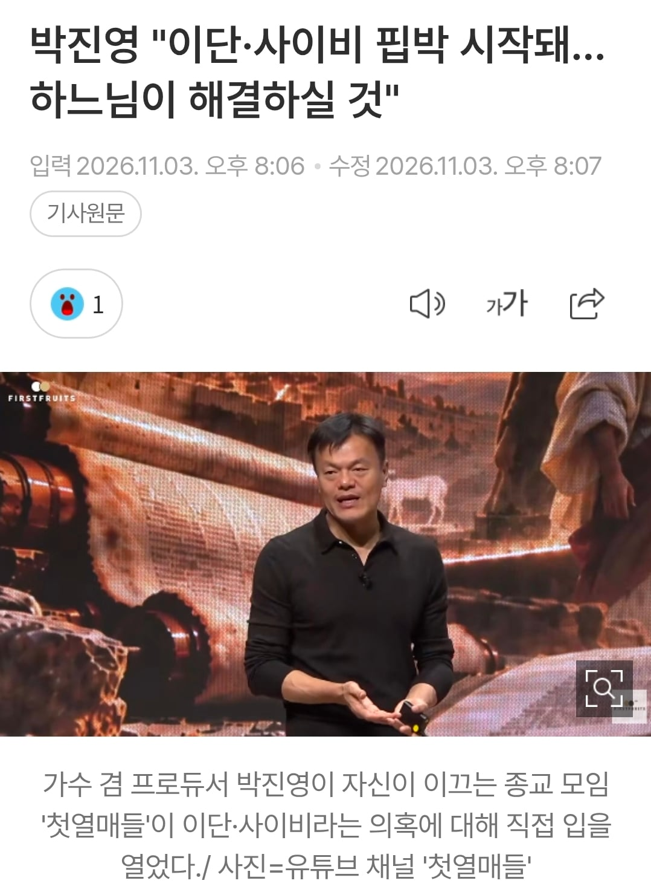
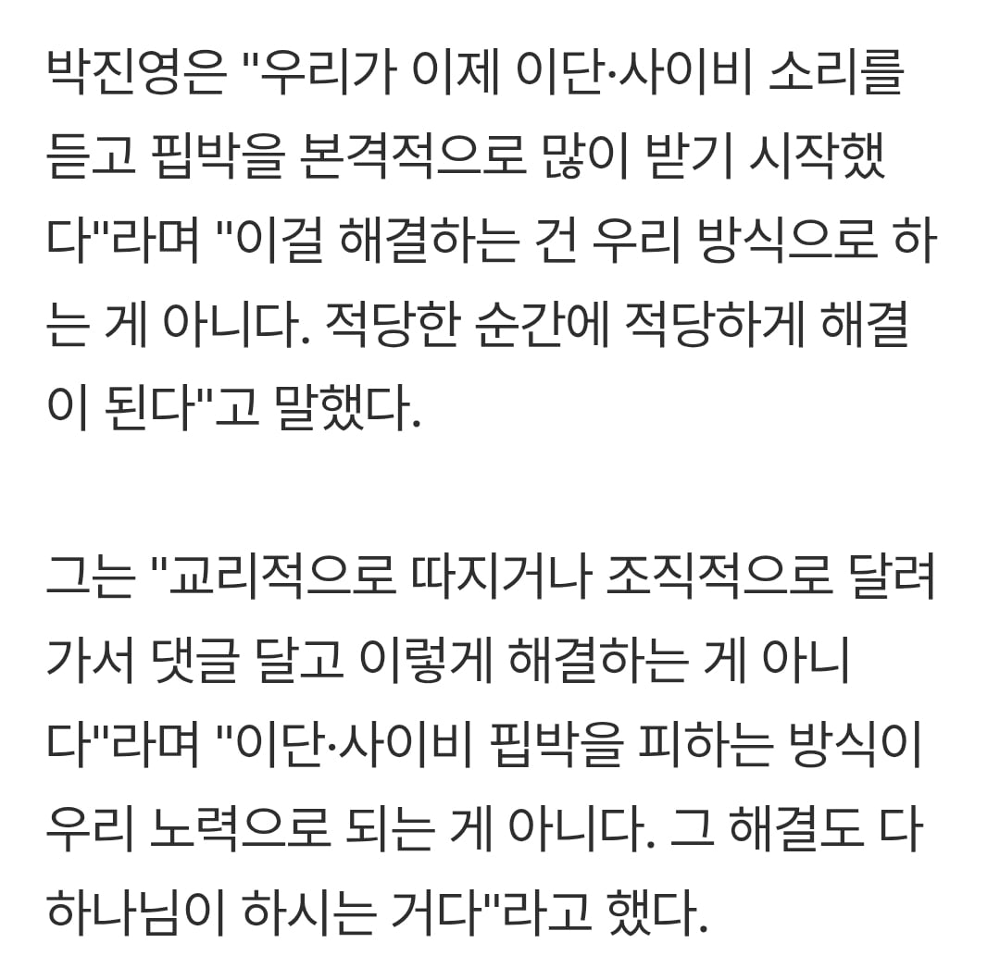
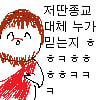

하나님 : 제가요? 왜요?
Ts말포이는 다들 좋아하던데?? 망상씹덕소설책 자의적으로 해석했다고 왜 열내는거지?
jyp의 간판같은 사람이 저런 이슈가 있는거 자체가 종교인이보든 비종교인이 보든 긍정적인모습으로 보기힘드니까 그럼. 주주들 지금 존나 피말릴듯ㅋㅋㅋㅋㅋㅋ
왜냐면 ts말포이는 실존하지 않아서 물어 뜯지 못하니까..?
jyp는 ㄹㅇ ㅈ됐네 ㅋㅋㅋㅋㅋㅋㅋㅋ돈벌어주는 트와이스 스키즈도 슬슬 끝나가고 미래는 없고 대표는 사이비고 ㅋㅋㅋㅋㅋ
그래도 한국에선 상위 0.01%의 삶
나쁜짓만 안하면
날아다니는 스파게티를 믿던
형이 믿는 나를 믿던
문제 있나
보통 저런걸 보고 싹수가 노랗다 라고 하지. 저런 소리 하고 다니는 사람들은 대체로 시작은 좋았으나 끝이 안좋음
형이 믿는 나를 믿으면 은하계 좆되던데
별것도 아닌 서브컬쳐에 빠져서 본인은 ㅈㄴ 특별하다고 자위하는게 개 패주고 싶네 ㅋㅋ
의심의 얼룩은 지워지지 않는다
기도 참석하면 아이돌 포카 나눠주냐
맛탱이 갔구나
근데 틀린말 아닌게 개신교 중 이단 취급받는 집단들이 세력이 커지면 개신교에서 나중에 인정해줌 신도수가 늘어나면 방법이 없음ㅋㅋㅋ
삼위일체를 다르게 해석하는건 인정해줄수가 없음
이건 기독교 근간을 흔드는거임
박진영논리면 성부와 성자는 다른 존재이지만
성자가 성부의 뜻에 복속했다 그래서 셋이 하나라는데
그러면 극단적으로 어느날 박진영이 나도 성자다 라고 할수있는거임
못할 것도 없지
그만해...주가 떨어져...
딱히 틀린말 아니지 않나? 기독교도 무슨 회 이런걸로 다 갈라져있지 않나? 그럼 서로 이단임? 이단인지 사이비인지 하나님의 뜻대로 될 거라는게 정답 아닌가..? 그렇다고 박진영이 jms같은짓을 하는것도 아니고..
그거랑 전혀 다른문제라서
삼위일체를 다르게 해석하는건
기독교라고 이야기할수없음
아 그런거임?? 고맙습니다! 나는 그냥 교리 이런거 이야기하고 다니는 건 줄 알았는데 더 근본적인 무언가가 있었나보군요..잘못 알고 있었는데 덕분에 잘 알게됐습니다!
이번 정부에서 국가일 좀 한다고 작업들 많이 치네
기독교인은 아니지만 밖에서봤을때 삼위일체론이 너무 모순된다고느끼긴 했음 명쾌하게 설명해주는 사람이있나
논리적으로 당연히 말안되고 기독교 내에서도 표현할수없는 신비라고 퉁치고 대충 넘어감
일단 12제자와 초기 교회신도들은 부활체험 이후에 진심으로 예수님이 신인걸 믿었음
그런데 유대교 유일신 신앙에서 하느님은 한분이신데
예수님도 신이고
심지어 예수님이 하느님 '아버지'와 대화하는 별도의 인격이란게 명확한 모습도 성경에서 보여줌
이걸 논리와 언어로 해석해보려고 예수님은 하느님이 변신해서 내려온거다, 예수님은 원래 퓨어 인간이였는데 하느님이 입양해서 후천적으로 신이되었다 등등 많은 주장이 난립했는데 (전부 이단판정임)
결과적으로 짜치는 해석들 다 포기하고 그냥 성부 성자 성령 세분이 태초부터 한분인걸로 넘어갑시다하고 합의한거임
추가적으로 기독교의 핵심이
->창조주인 신이 인간을 너무 사랑해서 신 본인이 스스로 희생하면서까지 인간을 구원했다!
이 명제이기 때문에 하느님=예수님인 삼위일체 교리가 중요한거임
이단적인 해석에따라 예수가 하느님 본인이 아니거나 하느님이 예수에게 명령해서 한거라면 이 명제가 훼손되니까
고맙습니다 횐님,,, 원래 논리적으로 이해안가는게 맞군요... 그치만 왜 그래야만하는지 이해가 갔습니다 ㄱㅅ합니다
주주 단톡방 오열..
뭐 신학과라도 나오셨나?
잘 나가다가 왜... 역시 인간의 정신력은 한계가 있는 자원인가보다

박해받는 순교자 이미지 어케참노